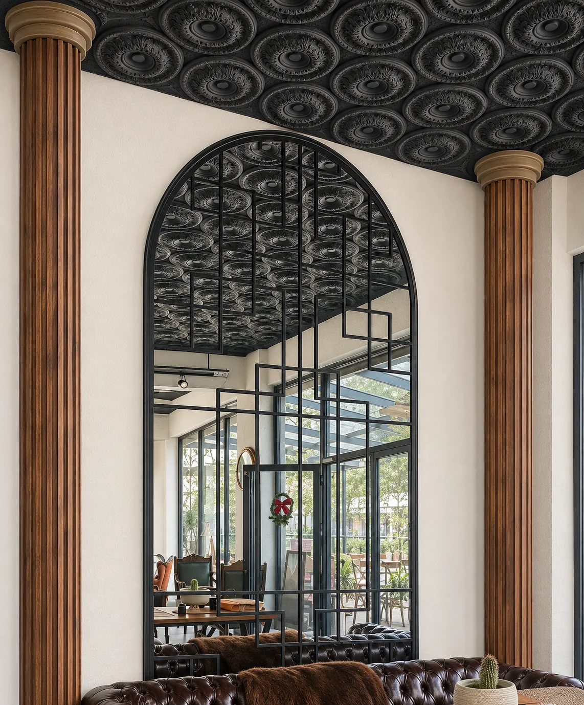

Kafe, restoran ve ev tavanları için özel desenli 2D kabartma tavan kaplaması nasıl tasarlanır ve uygulanır? Dizaynes ile tavanınıza karakter kazandırın.
Bir mekâna girdiğinizde gözünüz ilk olarak duvarlara ve masalara gider. Tavan ise çoğu zaman boş kalır. Oysa tavan, mekânın en geniş ve en az kullanılan yüzeylerinden biridir. Özel tasarlanmış bir kabartma tavan, bu yüzeyi mekânın imzası hâline getirir.
2D kabartma nedir?
2D kabartma, düz bir yüzeyin üzerine desenin hafif derinlikle işlenmesidir. Heykel gibi tam hacimli bir form üretmek yerine, desen yüzeyden kabarır ya da yüzeye çökerek ışık ve gölgeyle okunur. Böylece tavan, düz boyalı bir yüzey gibi değil, dokulu bir tasarım olarak algılanır. Işık yönü değiştikçe desenin görünümü de değişir.
Neden tavanda kabartma?
- Mekâna kimlik katar. Tavan deseni, konseptin (antik, modern, sade, gösterişli) tamamlayıcısı olur.
- Bakış yönünü genişletir. Duvar ve zemin kadar tavan da tasarıma dâhil edilince mekân bütünlük kazanır.
- Aydınlatmayla birlikte çalışır. Gizli led ya da spot ışık, kabartmanın gölgelerini öne çıkarır.
- Özel tasarıma izin verir. Hazır kalıp desenlerin aksine, markanıza ya da temanıza göre desen çizilebilir.
Referans çalışmamız: antik hiyeroglif desenli kafe tavanı
Bir kafe için antik hiyeroglif desenlerle tasarladığımız ve kabartma olarak uyguladığımız dekoratif tavan kaplaması, bu yaklaşımın iyi bir örneği. Aynı kafede 4 metre yüksekliğe ulaşan özel tasarım ayna ve zeminden tavana uzanan sütunlar da yaptık. Tavan, duvar ve sütunlar aynı tema altında tasarlandığında mekân tek bir hikâye anlatır.

Hangi malzemelerle yapılır?
Projeye göre strafor, alçı, ahşap, metal ve taş gibi farklı malzemeler kullanılabilir. Strafor, hafif olduğu için tavan uygulamalarında öne çıkar. CNC ile desen hassas biçimde işlenebilir, yüzeyi kaplanıp boyanarak istenen görünüme (taş, metal, alçı etkisi) getirilebilir.
Süreç nasıl işler?
- Keşif ve brif. Mekânın ölçüsü, tavan yüksekliği ve kullanım amacı belirlenir.
- Desen tasarımı. Konsepte uygun desen çizilir. Antik, geometrik, bitkisel ya da markaya özel olabilir.
- 3D görselleştirme. Tavanın tamamlanmış hâli uygulamadan önce görülür, değişiklikler bu aşamada yapılır.
- Üretim. Desenler seçilen malzemeden kesilir ve işlenir.
- Kaplama ve boya. Yüzey, istenen renk ve dokuya getirilir.
- Montaj. Parçalar mekânda tavana sabitlenir ve birleşim yerleri düzeltilir.
Planlarken dikkat edilecekler
- Tavan yüksekliği ve ışık yönü, desenin derinlik algısını etkiler. Erken aşamada 3D önizleme bu yüzden önemlidir.
- Aydınlatmayı tasarımla birlikte düşünün; sonradan eklenen ışık kabartmayı kapatabilir.
- Kafe, restoran gibi kamuya açık mekânlarda malzemenin ilgili yangın ve iç mekân yönetmeliklerine uygunluğunu önceden kontrol edin.